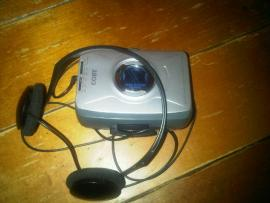

At Home He's a Tourist
picture:

Monday night I decided to go to Bowery Poetry Club. I brought my COBY so I could listen to tapes and the radio on the trip downtown. I'm not sure about COBYS, the radio is good and stays functional for a long time but the cassette player gives out after a couple of months. I was listening to a tape and it would play at normal speed, then it would really slow down. I would press stop, fast forward for a few seconds, then press play and the COBY would play at normal speed, then it would slow dow, repeat the process...etc...etc...etc. I'll buy some new batteries and see if that helps but I seriously doubt it. It's strange that the COBY is the only portable cassette player I can ever find retail in New York because the Sony Walkman is an amazing, durable, long lasting cassette player that can last for years, and doesn't eat tapes as often as COBY. The only reason I have the COBY is I got it as a gift. I was going to return it and order a Walkman online but I thought maybe the COBY had improved ( I had one once a long time ago and it was the same poor quality) but it hadn't at all, but since it was a gift it was cool just to check and see if the COBY had made any improvements. It's also cool that for the first time in a long time I'm enjoying listening to the sounds of the city. However there is nothing like listening to some great music on the go, so I'm really leaning towards ordering a walkman. Sony is discontinuing them
(unbelievable) so I better act soon or I'll have to wait five years till they're reintroduced as a trendy expensive novelty item in trendy expensive boutiques and trendy expensive catalogues.
I get to the Bowery and I love that place. Monday night is the NYC talent show with Diane O'Debra and Victor Varnado. There's always a cast of characters there, some do standup, some poetry, some music, some performance art. In fact a lot of Artstars show up to perform. I was psyched I got there and got a great seat at the bar. I ordered a beer and was ready for the show. Stefan opened the show, he's a great saxophone player so I expected a honking sax. I noticed Stefan had this huge backpack on his back. I thought maybe he was doing a traveling , backpacking, saxophone playing schtik, and that would be a funny idea so I thought Great! Stefan starts to play and these orange flames start shooting out of the saxophone, at first I thought it was a magic trick, optical illusion or hologram or something but no, it was real fire! I was stunned. I keep watching and listening until I realized his huge backpack was full of explosive liquid and the tube connecting the sax to the pack seemed dangerously close to the flames. I was going to play it cool but I pulled a George Çostanza and ran out of the bar. Anyway Stefan finished, everything was fine, and everyone loved his performance. The only tragedy was someone took my seat at the bar so I had to stand. Diane and Victor performed an amazing rap song. The song was really funny and Diane and Victor are really great rappers so it sounded great too. Of course I saw A Brief View of the Hudson, their one of my favorite bands in New York, and of course they were terrific as always. They play country music and they're the house band at Bowery and a few other places around the city. It's a late night at NYC Talent Show and I was really tired from standing so I had to leave about halfway through. Anyway like I said I love that place and I had a great time. So on the way home I bought new batteries for the COBY just to see if it was the batteries, I didn't listen to it yet but I will try it right now...... Wow! I owe COBY a big apology, it sounds great with some new Duracell batteries, Duracell are great batteries so I'm only half surprised. I think the Walkman is better but if you don't mind having a tape eaten once in a while the COBY is alright.
- Prewar Yardsale's blog
- Login or register to post comments
Comments
Place to buy a Walkman
I bought one that records at staples in Union Square.
It's possible that the ones that record are easier to find (without going online) because they sell them to be used to record meetings, etc.
If I remember correctly the original Walkman (1980 maybe?) was like 100 bucks.
My friend got one for a gift.
I bought some other model, which was big and heavy and blocky.
It had a forwardwind button and a rewind button.
Mine was maybe $45.
More than the Walkman I bought last year.
http://barrybliss.info/
Walkmans
It's funny you mention the Walkman, Mike, because last night I pulled out my old Walkman in order to listen to some cassettes I had of a series of interviews I did a while back (this is in order to prepare an article that I promised Jon Berger about three years ago, but that's another story). Anyway, looking back at the Walkman made me realize how, in retrospect, I feel they are so poorly designed in terms of their user interface (or at least this one is). This Walkman has a lot of features-that is one thing about SONY, they always seem to jam in the features at the expense of a coherent user experience. So, for example, although this Walkman can automatically switch the direction that the tape is playing (without having to stop the tape and turn it over), I find it very confusing to determine which way the tape is going to play when I start it. Maybe this has more to do with my own powers of perception than anything, but I am sure that there would be a better way to indicate this than the confusing little switches all over the top of the player. This Walkman has built-in speakers but they don't sound very good. However, I will say this, when I used a good set of headphones last night the sound of the tape was good, so I will give SONY credit for their audio fidelity, which is usually an area in which they shine--in this case, as long as you use good headphones. I found the same thing to be true about SONY with some of the other audio components I bought years back. The audio fidelity is really good but the user interface is terrible. I used to love Minidisks because I could easily record stuff live when I was out and about. I have many old Minidisks and when they were popular I bought this heavy-duty player for my stereo system. It is so complicated to use that I have to have the owner's manual with me practically anytime I want to do anything with it--although the disks I recorded do sound great.
There is something comforting about going back to these old cassettes because they remind me of the time when they were popular. Frankly, I never really liked audio cassettes very much. I found that I spent most of my time fast forwarding and rewinding to get to the right spot. However, on the other hand, they are a much more tactile medium than some others. Unfortunately they are also subject to wear and degradation with age. Over the holidays I found an old cassette that had my Dad's voice on it, one of the only recordings of him that I have, and when I went to play it the tape pulled off the cassette reel. So now I have to figure out some way to get that fixed.